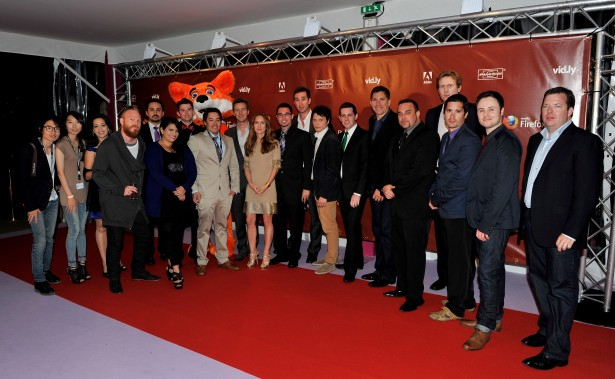

以「關於Firefox的故事」，為創意號召的Mozilla 2012年Firefox Flicks 短片召集令，今年共吸引到全球超過400支短片角逐競賽，參與人跨越電影相關人員和學生族群，在5月17日的法國坎城影展Mozilla 舉辦的活動中，公佈25件獲獎作品，詳細內容請見www.firefoxflicks.org.
 左起：Mozilla CEO, Gary Kovacs, Couper Samuelson, Edward Norton 和 Shauna
左起：Mozilla CEO, Gary Kovacs, Couper Samuelson, Edward Norton 和 Shauna

其中，榮獲最佳成績的六件獲獎作品與其得獎人飛抵法國坎城接受頒獎，以下為得獎人的姓名和作品名，Mozilla 感謝大家今年的參與，也再次恭喜獲獎者以及如此精彩又傑出的作品。
Bogata, Columbia — Andres Felipe Mesa Rincon
Balmain, Australia — Gavin Fenwick Christensen, Candice Thom
I’m Falling in Love with Firefox
Cheongju-si, South Korea — Lee Sang Woo
London, UK – Sean O’Riordan, Remy Bazerque, Andrew Alderslade, Eleonore Cremonese
Toronto, Canada – Eric Perella, Andre Arevalo, Mark Galloway
Where the Weird Things Are Not
Alarzia, Spain –– Ferran Brooks and Ivan Cordero Raiminguez
原文出處 http://blog.mozilla.org/blog/2012/05/17/congratulations-2012-firefox-flicks-winners/